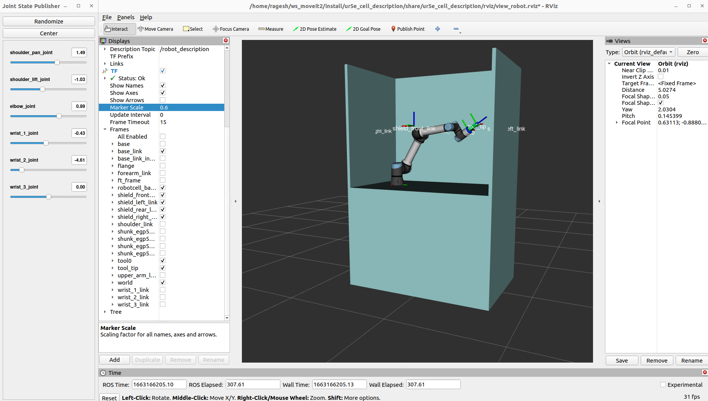

layout: true <div class="header"><img src="https://images.squarespace-cdn.com/content/v1/51df34b1e4b08840dcfd2841/1606823817404-Z5YILRLYBT2VHCN6JVCB/RIC+Europe+Logo+TM.png" style="background-color:transparent"/></div> <div class="footer"><img src="https://www.ipa.fraunhofer.de/content/dam/ipa/ipa.svg" /><p>© Fraunhofer IPA</p></div> <div class="triangle"></div> --- <!-- page 1 --> # Setting up the Robot Cell ## Composing the xacro components to create the robot cell <div> <center> <img src="resources/0_lego.png" width="500px"> </center> </div> --- <!-- page 2 --> # Robot Cell - The setup for today's demonstration has 3 static components described in URDF *(XACRO)*: - **Workcell** - workcell of the robot - **UR5e** - robotic arm - **ShunkEGP50** - robot gripper - The setup also consists of a camera component which will be added later via a `static_transform_publisher`. - Aruco Markers are used to detect the pick and place posed dynamically : Not described in URDF --- <!-- page 3 --> ## Basic steps - Identify the components used for the ur5e_cell project - Locate the ROS2 description packages for the components - Find data sheet of components without description files - Start composing the components. --- <!-- page 4 --> ## Creating ur5e_cell_description package #### ROS2:rolling - Create a ROS2 package ```shell ros2 pkg create --build-type ament_cmake ur5e_cell_description ``` - Create `urdf` and `meshes` directory within the package - **`urdf`** - contains the components`.xacro` files - **`meshes`**- contains .stl or .dae files of the components - Create a `workcell.urdf.xacro` in urdf directory ```xml <?xml version="1.0"?> <robot xmlns:xacro="http://www.ros.org/wiki/xacro" name="ur5e_workcell"> <!-- include other components here --> </robot> ``` --- <!-- page 5 --> ## UR5e Robot - URDF of the UR5e robot is available in [ur_description](https://github.com/UniversalRobots/Universal_Robots_ROS2_Description.git) package - Include the UR5e robot component in `workcell.urdf.xacro` ```xml <xacro:include filename="$(find ur_description)/urdf/ur_macro.xacro" /> ``` - Initialize the parameters ```xml <xacro:arg name="name" default="ur5e" /> ``` - Instantiate the macro ```xml <xacro:ur_robot name="$(arg name)" prefix="$(arg prefix)" parent="robotcell_base_link" . . . . . . . . . . . . . . . . script_filename="$(arg script_filename)"> <origin xyz="${robot_center_offset_length} ${robot_center_offset_width} ${robot_base_height}" rpy="0 0 ${pi/2}" /> </xacro:ur_robot> ``` --- <!-- page 6 --> ## ShunkEGP50 Gripper - URDF of the ShunkEGP50 Gripper is composed in [ur5e_cell](https://github.com/ipa-rar/ur5e_cell/blob/main/ur5e_cell_description/urdf/shunk_egp50.xacro) - Include the ShunkEGP50 Gripper component in `workcell.urdf.xacro` ```xml <xacro:include filename="$(find ur5e_cell_description)/urdf/shunk_egp50.xacro" /> ``` - Initialize the parameters ```xml <xacro:property name="gripper_name" value="shunk_egp50" /> ``` - Instantiate the macro ```xml <xacro:schunk_egp50 /> ``` --- <!-- page 7 --> ## Robot cell - URDF of the robot cell is composed in [ur5e_cell](https://github.com/ipa-rar/ur5e_cell/blob/main/ur5e_cell_description/urdf/robot_cell.xacro) - include the robot cell component in `workcell.urdf.xacro` ```xml <xacro:include filename="$(find ur5e_cell_description)/urdf/robot_cell_clone.xacro" /> ``` - No need to instantiate as it is not a macro --- <!-- page 8 --> ## Creating joints - Create the joints between the components ```xml <link name="world" /> <joint name="world_to_robot_cell_joint" type="fixed"> <parent link="world" /> <child link="robotcell_base_link" /> <origin xyz="0 0 0" rpy="0 0 0" /> </joint> <joint name="robot_to_gripper_joint" type="fixed"> <parent link="tool0" /> <child link="${gripper_name}_base_link" /> <origin xyz="0.0 0.0 0.0" rpy="0.0 0.0 0.0" /> </joint> ``` - [Complete description of the robot cell](https://github.com/ipa-rar/ur5e_cell/blob/main/ur5e_cell_description/urdf/workcell.urdf.xacro) --- <!-- page 9 --> ## Aruco Markers <div> <center> <img src="resources/ar-tags.png" width="440px" height="440px"> </center> </div> Figure 1: Aruco markers --- <!-- page 10 --> ## Launch files for viewing the URDF - Nodes to be launched - `robot_state_publisher` - `rviz2` - `joint_state_publisher_gui` - Conversion of XACRO to URDF ```python robot_urdf = os.path.join(get_package_share_directory('workcell_description'), 'urdf', 'workcell.urdf.xacro') robot_urdf = xacro.process_file(robot_urdf) robot_description = robot_urdf.toxml() ``` - `robot_description` is passed as parameter to the `robot_state_publisher` ```python robot_state_pub_node = Node( package='robot_state_publisher', executable='robot_state_publisher', parameters=[ {"robot_description": robot_description}, ], ) ``` [Complete launch file](https://github.com/ipa-rar/ur5e_cell/blob/main/ur5e_cell_description/launch/view_ur_cell.launch.py) <!-- - `robot_state_publisher` takes in the urdf file as parameter and visualize the description in the rviz --> <!-- - `joint_state_publisher_gui` brings up the GUI to change the joint values --> --- <!-- page 11 --> ## Result: Complete Workcell <div> <center>  </center> </div> --- <!-- page 12 --> <div class="centered"> <h2> <center> End of Presentation </center> </h2> <h1> <center> Questions </center> </h1> </div>